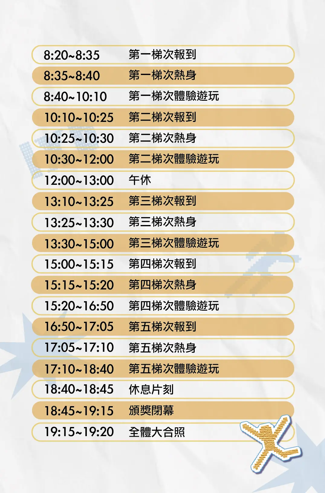

關於本次賽事
【ExErcise】科技 × 運動賽事 打破傳統，我們用科技重新定義運動競技。
無論你是哪類猛將，這裡都有屬於你的戰場。 準備好挑戰極限了嗎？快來與夥伴一同釋放自己的潛能吧！
七大競賽項目


賽事細節

計分規則
一、個人單項挑戰
- 排名方式｜依各項目的分數高低進行排名。
- 獎勵機制｜各單項取第一名給予獎勵。
- 同分判定｜如遇成績相同（同分）之情況，將依較早完成報到者排名優先。
二、個人全項總積分
積分換算｜各單項排名前十名者可獲得對應積分：
- 第一名：10 分
- 第二名：9 分
- 以此類推.....，第十名：1 分。
採計方式｜
- 本賽事共分為七大類別。
- 若於同一大類別中參與多個項目並皆獲得積分，將取最高分之項目，作為該類別的最終積分。
總排名與獎勵｜
- 結算七大類別總積分，分數越高者排名越前。
- 總排名前三名給予獎勵。

參賽資格
一、線上報名
採表單預約制，每梯次限額 34 人。
報名完成後，系統將於兩日內寄【報名確認信】至您填寫的電子信箱，
若沒收到，請務必於 12/26（五）前 聯繫主辦單位。
二、參賽須知
完成報到後，將發放「參賽編號手環」用於紀錄競賽成績；活動期間請妥善保管手環，並於離場時繳回服務處。
請務必穿著適合運動的服裝與運動鞋，以確保活動安全。
挑戰過程中請隨時留意自身身體狀況，量力而為。
一、主辦單位：
二、合作單位：
國立臺北科技大學 113級互動設計系
尚未解鎖
EMAIL：ntut.ixd.113@gmail.com
追蹤官方IG